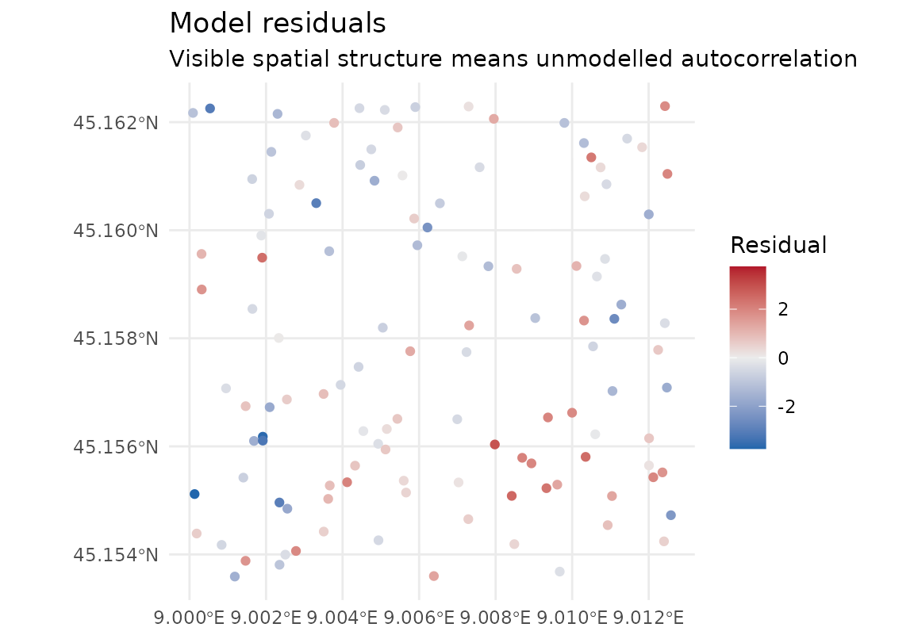
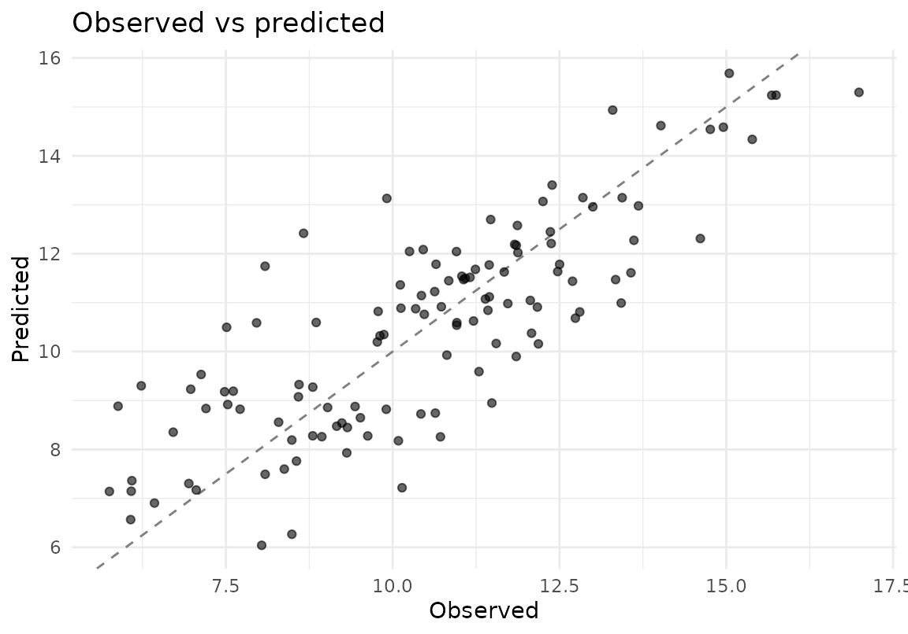
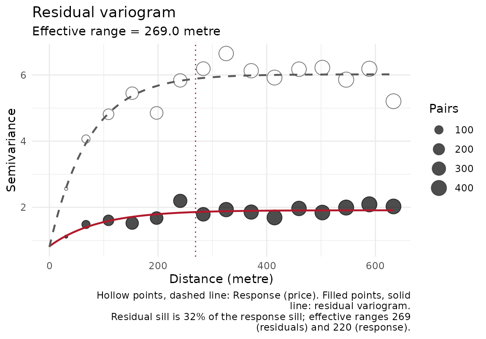

Diagnostic plots for a spatial_fit. The package previously shipped
print() and summary() methods but no plot(), so the
checks most likely to reveal a problem (is there structure left in the
residuals, and where is it) had to be written by hand each time.
Arguments
- x
A
spatial_fit.- type
One of:
"residuals"Residuals mapped at the training locations. Spatial structure here is the signal that the model has not captured the autocorrelation.
"observed_predicted"Observed against fitted, with a 1:1 reference line.
"variogram"Empirical variogram of the residuals with the fitted model overlaid, so the fit can be judged rather than trusted, and (unless
response = FALSE) the variogram of the response itself on the same points and lags, drawn hollow with a dashed fit. The gap between the two curves is the spatial structure the model absorbed: a residual sill well below the response sill means most of it, two curves that coincide mean none. When both effective ranges were identified the caption gives the residual sill as a share of the response sill and the two ranges; when either variogram reached no sill the caption says so and compares nothing, because a sill the data never reached is not a number to divide by. The residual range is expected to come out shorter and the residual sill lower even when the model is right, because residuals of a fitted trend understate the variogram (seeestimate_sac_range(), "Detrending and the residual-variogram bias"). The distance axis is labelled in the units of the CRS the variogram was actually fitted in, which is not necessarily the fit's own CRS (lon/lat data are projected first). A single-direction fit names its azimuth in the title; a fit that identified no range says why in the subtitle, since the overlaid model line is then not a fit to believe. Requires 'gstat'."coefficients"For a GWR fit only: the local coefficient of one
termmapped at the training locations, which is the reason to fit GWR at all. Locations where the local design is collinear (the kernel-weighted window's scaled condition index is above 30, or the window is singular) are drawn hollow and grey (mask = TRUE), because the smooth surface a naive map draws over them is the picture of an unstable estimate, not of a relationship; the subtitle counts them. The condition indices are the fit'sinfo$local_collinearity, computed for every location when the model was fitted. A diverging scale centred on zero is used when the coefficient changes sign, otherwise a sequential one.
- response
Logical, default
TRUE: fortype = "variogram", overlay the response's own variogram. Ignored by the other types.- term
For
type = "coefficients": which local coefficient to map, one of the namescoef(x)returns. DefaultNULL: the first predictor. Ignored by the other types.- mask
For
type = "coefficients": whether to draw locations whose local design is collinear (scaled condition index of the kernel-weighted window above 30, or singular) as hollow grey points instead of colouring them by a coefficient that is not to be believed there. DefaultTRUE. Locations whose coefficient is non-finite are masked either way.- ...
Ignored.
See also
coef.gwr_fit() for the coefficients themselves.
Other plotting:
plot.aoa(),
plot.block_size_sweep(),
plot.feature_selection(),
plot.gwr_model_selection(),
plot.resolution_profile(),
plot.sac_range(),
plot_calibration(),
plot_cv_metrics(),
plot_folds()
Examples
# Works on any spatial_fit; a forest keeps the example free of the optional
# GWR/Stan backends.
if (requireNamespace("ranger", quietly = TRUE) &&
requireNamespace("ggplot2", quietly = TRUE)) {
library(sf)
# price depends on elevation, which the forest sees, and on a spatially
# correlated field it does not: that field is what the residual plots
# are there to find.
set.seed(2)
n <- 120
xy <- data.frame(x = 5e5 + runif(n, 0, 1000), y = 5e6 + runif(n, 0, 1000),
elev = rnorm(n))
D <- as.matrix(dist(xy[, c("x", "y")]))
xy$price <- 10 + 2 * xy$elev +
as.numeric(t(chol(exp(-D / 100) + diag(0.3, n))) %*% rnorm(n))
pts <- st_as_sf(xy, coords = c("x", "y"), crs = 32632)
fit <- fit_rf_model(pts, "price", "elev", num_trees = 100, seed = 1)
# print() each one: inside a braced block only the last value is drawn.
print(plot(fit, type = "residuals")) # structure left in the residuals
print(plot(fit, type = "observed_predicted"))
if (requireNamespace("gstat", quietly = TRUE))
plot(fit, type = "variogram") # residual and response variograms compared
}


